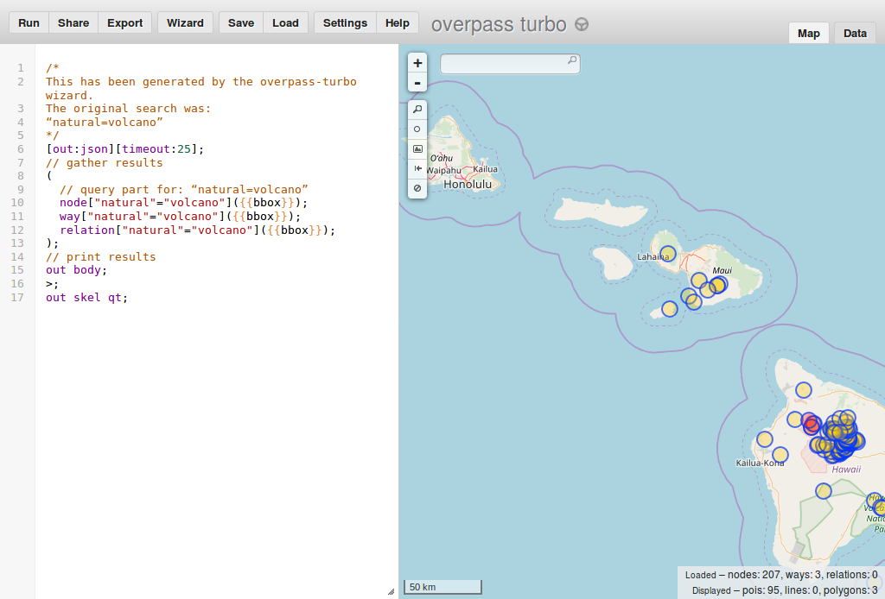

Try googling <volcano OSM Wiki>. Results should include page describing volcanoes as one of results.
This page has a description that describes that natural=volcano is used to tag volcanoes.
So we want to hunt for volcanoes.
- Go to http://overpass-turbo.eu/s/zNU (this link places you at a specific area).
- Press "Wizard" button on the top menu. A window should appear
- Into box type:
natural=volcano - Press 'build and run query'
- you should see marked objects representing volcanoes
- Congratulations!
You should see something like that, with circles marking points where volcanoes are marked.
